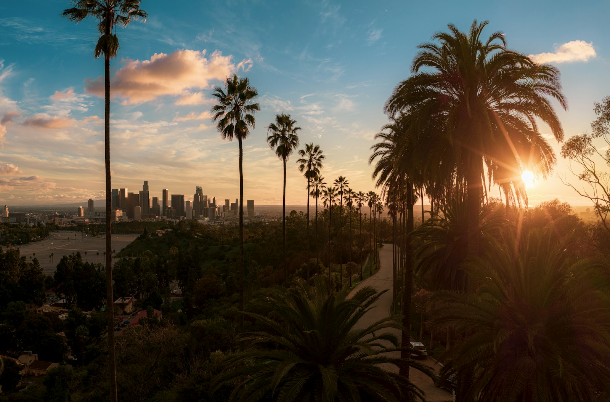
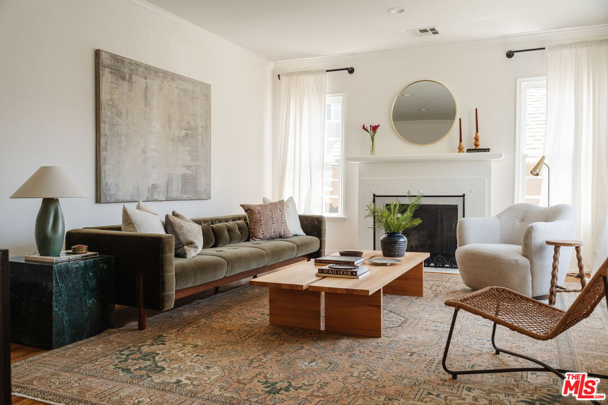
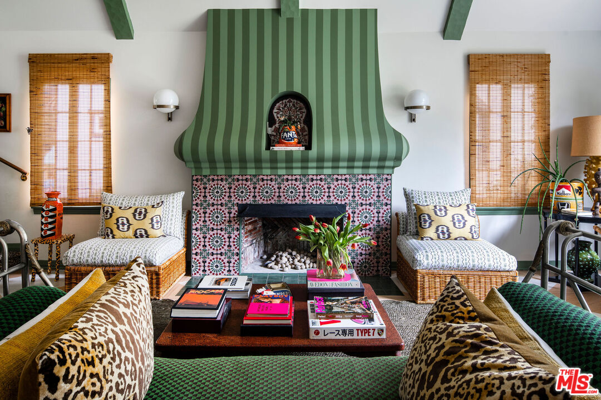
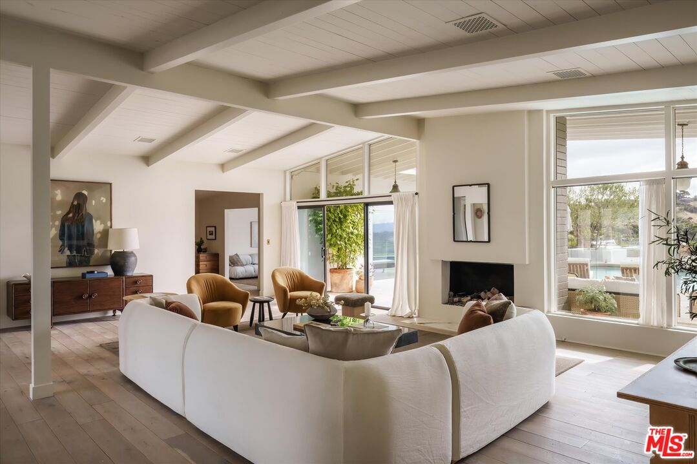
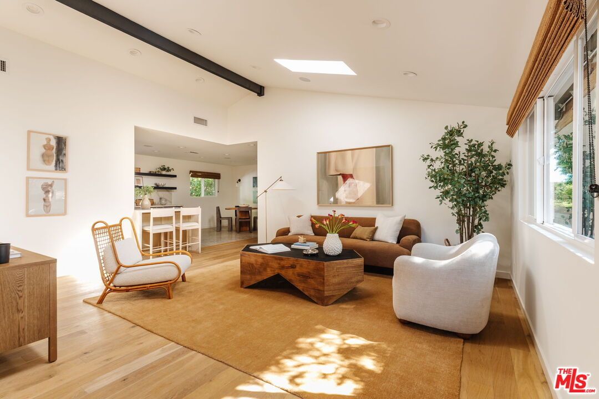

I built this, and it’s gorgeous.

Last month I told you I built this website myself, and what I didn’t tell you is what happened in the middle of building it.
I am not technical and I’ve never written a line of code in my life, so somewhere around day two I remember standing at my kitchen island staring at the screen and thinking, wait, I just made that. A version of this site that would have cost me somewhere around ten thousand dollars if I’d hired it out, and I built it myself in two or three days with my kids home from school. There was a real moment where it landed and all I could blurt out loud was holy, and a word starting with “sh” that I am absolutely not typing in my newsletter. I built this, and it actually works! And it was gorgeous.
Here’s the part I actually want you to know about, though. It didn’t stop at the website. A few of you have asked me for real market breakdowns lately, something that actually answers your question instead of a generic flyer, and I’ve started building those the same way: interactive and specific to you, and put together in an afternoon instead of a week of back and forth. That’s the real shift. It’s not that I learned a party trick; it’s that I found a new way to actually take care of the people I work with.
I think curiosity is underrated in this business. Try the new thing and learn the tool nobody’s asking you to learn, because it doesn’t just make you look sharp. It changes what you’re actually capable of doing for the people counting on you.
Not every house got the memo

And can we talk about Hoover Street for a second? I told you about it last month, the open house that had people spilling out the front door and lined up down the walkway, and it just closed. Twenty-two percent over asking, thirteen offers on one house.
I’ll be honest, that is not what I’m seeing out there right now; buyers still have real leverage in most of this market. But every so often a property comes along that’s special enough to write its own rules, and this one was zoned R2, which is genuinely flexible. A buyer there can build a duplex, add an ADU, or explore other multi-unit potential the lot allows, sitting right in the middle of Los Feliz at a price point that made the math irresistible. It just detached from everything else happening around it. I got to watch it happen in real time, and it never gets old.
Did you know?
- Between 1908 and 1940, Sears sold about 70,000 entire houses through its catalog: 447 different styles, shipped by railroad in roughly 30,000 numbered, pre-cut pieces you assembled yourself. Some of those houses are still standing, and their owners have no idea they got there by mail order.
- Homes within a mile of a Whole Foods appreciate noticeably faster than homes near other grocery stores. Zillow’s own research found the effect kicks in right after the store opens, not before. The “Whole Foods effect” is a real, measurable thing, not just a real estate agent’s line.
- A fresh coat of paint adds an average of $12,130 to a home’s value. It’s still the cheapest real return you’ll find on a renovation list.
- “Color drenching”—one bold color head to toe, walls, ceiling, trim, even furniture—is up 149% in home listings this year. It’s exactly what I did in the Sycamore House dining room, and it turns out we were ahead of the curve. Maximalism isn’t creeping back quietly; it’s kicking the door in.
What’s happening in LA?
- Disney Cartoon Studio Square Block Party. I have such a soft spot for this one. There’s a plaque tucked into an unassuming stretch of Vermont Avenue marking the exact spot where Walt and Roy Disney started it all in 1923, above what’s now just another storefront, and once a year the whole neighborhood throws it a party like it deserves. Free, no ticket needed, just Los Feliz turning out for its own history. I love that something this enormous started that small, in that ordinary a building, on a street most people walk past without a second look.
- Goodfellas at Cinespia. This is the last one of the season, and if you’ve never gone, you need to before summer’s fully gone. You bring a blanket, a bottle of wine, sit out on the lawn with a few thousand of your closest strangers, and watch a movie projected against a mausoleum wall while the sun goes down behind the palm trees. Goodfellas is exactly the note I’d want to close a season on. Tickets are $31, parking’s $24 to $36, and it’s worth every dollar just for the setting.
- Rosetta Osteria & Crudo Bar. I keep hearing about this place and I am dying to get there myself. It’s from the team behind Leona’s, coastal Italian with an actual raw fish bar, and everyone I know is talking about the spaghetti vongole with bottarga and the pesto hamachi. Ventura Boulevard keeps getting better and I am here for every bit of it.
Featured listings





- Hollywood Hills East — 2351 Canyon Dr. 4 BD · 3 BA · 2,142 SF · $2,599,000. Featured in Architectural Digest and reimagined by designer Carlos Mota, this 1930s Spanish home in The Oaks holds 4 bedrooms and 3 baths, all the character still intact. The living room climbs into soaring ceilings and a Juliet balcony you actually want to stand on, while the dining room wears hand-painted wallpaper like it’s always belonged there. The kitchen leads through a run of arches into a breakfast nook, tile work and stainless appliances doing the talking. Upstairs, the primary suite opens through French doors to a bath built around a freestanding soaking tub, Mota’s layered color and pattern running through every room without covering up what’s original. Out back, a private yard for actually living in it, plus a bonus space ready for a guest room, an office, a gym, whatever this chapter needs.
- 8337 Lookout Mountain Ave. 5 BD · 4 BA · 3,401 SF · $1,799,000. Live out your fairytale dreams in this enchanting 1908 castle-style residence that offers a rare connection to the neighborhood’s bohemian roots. Long before Laurel Canyon became the epicenter of the 1960s music scene, these wooded hills attracted Hollywood’s earliest stars, artists and creative outsiders seeking privacy and escape. Silent-film icon Clara Bow, the original “It Girl,” was among those drawn to the canyon, famously retreating to a castle-like hideaway with her beloved puppy. Built in 1908, this distinctive four-bedroom residence captures that same romantic, unconventional spirit. Originally conceived as a hunting cabin, the home unfolds with storybook details including two turret rooms and an intriguing bridge overlooking the main living space.
- Mid-City — 1434 1/2 S Sycamore Ave. 3 BD · 4 BA · 1,903 SF · $1,297,000. Set in the heart of Mid-City, this 3-bedroom, 4-bath home by architect Jay Vanos does something most houses don’t even attempt: it turns 360 degrees into a single view, the Observatory and downtown skyline on one side, the Pacific catching the light on the other. Floor-to-ceiling windows carry that view straight into an open-concept living space built for real life, not just photos, with a private balcony just off the main room. The kitchen is the kind you actually cook in, quartz counters, custom cabinetry, appliances that mean business. The primary suite has a walk-in closet done properly, and two more bedrooms give the house room to breathe.
- Sherman Oaks — 3627 Cody Rd, 91403. 4 BD · 5 BA · 3,739 SF · $4,997,000. Perched on nearly an acre north of Mulholland, this extraordinary 1956 Mid-Century Modern estate by architect Richard Dorman exemplifies Southern California post-and-beam design. Exceptional sunset and canyon views frame dramatic living spaces with soaring vaulted wood ceilings and walls of glass, creating seamless indoor-outdoor flow. Recently reimagined with meticulous attention to detail, the 3,739-square-foot residence seamlessly blends timeless architecture with elevated contemporary design.
- Highland Park — 5308 Range View Ave. 3 BD · 2 BA · 1,500 SF · $1,599,000. In Highland Park, this three-bedroom, two-bath contemporary sits under multiple skylights that keep the living room bright most of the day. The kitchen runs on custom oak cabinetry, Calacatta quartz counters, stainless appliances, storage you actually need. Two bedrooms flex for family, guests, or an office, while the primary suite looks out over the backyard and comes with its own ensuite, dual vanity, a walk-in shower with three heads, and a walk-in closet next to it. Out back, a pool anchors the yard alongside a built-in daybed and enough room to actually entertain. The finished two-car garage doubles as an office, gym, studio, or lounge, plus driveway parking for two more cars, an EV charger, security cameras, surround sound, and solar panels already in place. York Boulevard, restaurants and cafes and the shops that make Highland Park what it is, sits just down the street.